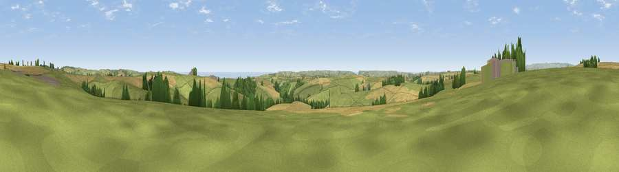

Viewpoint near East Allington
#11218 in England · top 28% of its area beats it · near East AllingtonWhere it is
The exact computed spot (SX 78875 47625). Click the marker for map links.
The view, rendered

A 360° render of this exact spot computed from the terrain model, tree cover and land cover — summer colours, afternoon light, calibrated against photographs of famous viewpoints. Real trees, hedges and buildings will differ in detail.
The panorama
Grey silhouette: terrain skyline in each direction (720 bearings, Earth curvature and refraction included). Dashed green: skyline with trees (+15 m) and buildings (+8 m) as obstacles. Blue strip: how far the ground is visible on each bearing.
Where the view opens
Wedge length = distance to the farthest visible ground on that bearing (vegetation-aware). Rings at 10, 25 and 50 km.
What fills the view
61% grassland · 30% cropland · 5% woodland · 3% water
Angular shares of the visible panorama (visual magnitude), not map area. Landscape diversity 0.41 (0–1 Shannon).
Key numbers
More beautiful places nearby
The staircase of upgrades: each row has a higher view potential than everything closer. Driving times are estimates from straight-line distance, calibrated against real road routing — check an actual route before setting out.
| Place | Direction | Drive | Score |
|---|---|---|---|
| Viewpoint near East Allington | N · 1 km | ~3 min | 68.3 |
| Viewpoint near Slapton | ESE · 4 km | ~9 min | 75.7 |
| Viewpoint near Strete | ESE · 5 km | ~10 min | 76.5 |
| Viewpoint near Beesands | SSE · 8 km | ~16 min | 80.9 |
| Viewpoint near South Hallsands | SSE · 11 km | ~20 min | 81.2 |
| Viewpoint near South Hallsands | SSE · 11 km | ~21 min | 82.5 |
| Viewpoint near East Prawle | SSW · 11 km | ~21 min | 83.3 |
| Viewpoint near East Prawle | S · 12 km | ~22 min | 84.6 |
50.31609, -3.70263 · source: screening · position refined by local search. Computed location — check access rights before visiting.